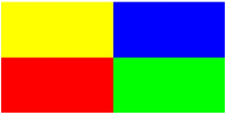

25.7.1 Arbitrary triangles in the plane
See Section 26.6.1 for the triangle command in
space.
The triangle
command creates triangles.
-
triangle takes three arguments:
a,b,c, three points (which can be given as a list).
- triangle(a,b,c) returns and draws the triangle with
vertices a,b and c.
Example
